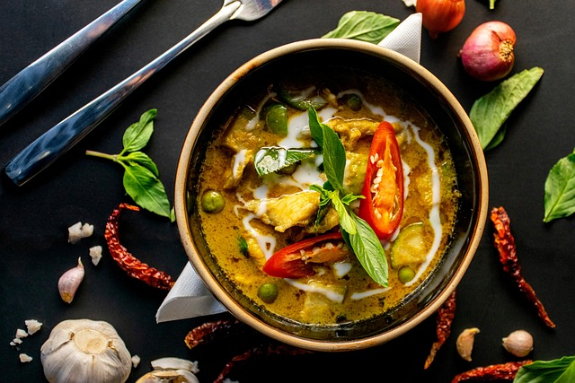

Thai Green Curry

Description
This is a cutdown version of Nagi's beautiful Thai Green Curry recipe, from RecipeTinEats!
Using only to practice webpage building, definitely go to her webpage for the real recipe and many more!
Ingredients
- 2 tbsp vegetable oil
- 1 cup (250ml) chicken or vegetable broth, low sodium
- 400 g/14oz coconut milk , full fat (Note 4)
- 1 - 3 tsp fish sauce *
- 1 - 3 tsp white sugar *
- 1/8 tsp salt *
- 6 kaffir lime leaves , torn in half (Note 5)
- 350 g/12 oz chicken thigh , skinless boneless, sliced (Note 6)
- 2 Japanese eggplants, , small, 1cm / 2/5″ slices (Note 7)
- 1 1/2 cups snow peas , small, trimmed
- 16 Thai basil leaves (Note 8)
- Juice of 1/2 lime , to taste
Steps
- Heat oil in a heavy based skillet or pot over medium high heat.
- Add curry paste (and garlic, ginger and lemongrass Extras, if using) and cook for 2 to 3 minutes until it mostly “dries out” - see video. Don't breath in the fumes!!
- Add chicken broth and coconut milk, mix to dissolve paste.
- Curry in a jar seasonings: Add 1 tsp fish sauce, 1 tsp sugar, no salt.
- Homemade curry paste seasonings: Add 3 tsp fish sauce, 3 tsp sugar, 1/8 tsp salt.
- Add kaffir lime leaves. Mix then bring to simmer.
- Add chicken, stir then lower heat to medium so it's bubbling gently. Cook 7 minutes.
- Add eggplants, cook 5 minutes until soft.
- Taste sauce. Add fish sauce or salt for more saltiness, sugar for sweetness.
- Add snow peas, cook 2 minutes until a bit softened, then stir through basil and lime juice. Sauce should have reduced but will still be a be on the thin side, not thick - that's how it's should be. DO NOT keep simmering - sauce will darken.
- Serve curry over jasmine rice with garnishes of choice.
Home